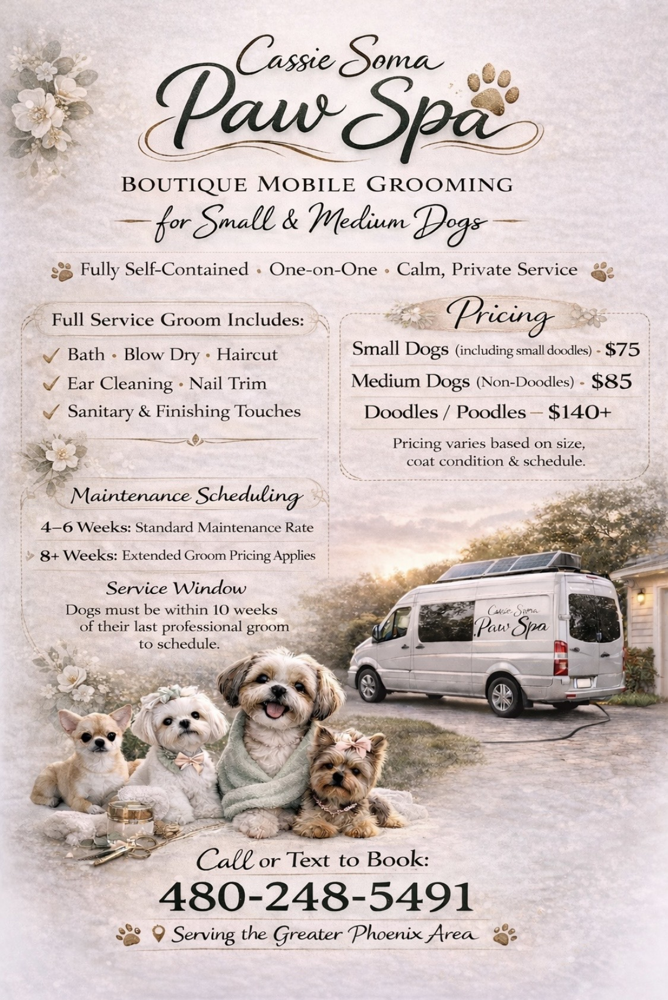
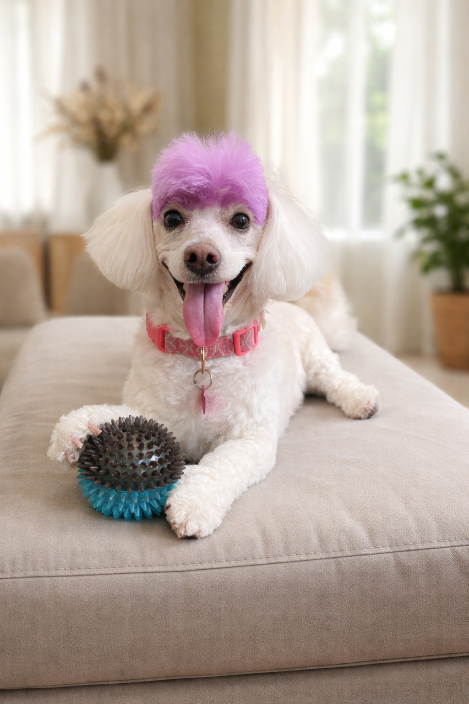

Cassie Soma is an artist and writer exploring embodiment, femininity, and the quiet rituals of daily life.
Her work moves between photography, essays, and the lived craft of dog grooming — observing the body, presence, and the small moments where identity settles into place.
Cassie writes regularly on Substack and shares ongoing photographic series documenting a slow-burn artistic life.
A developing body of photographic work exploring femininity, presence, and the relationship between subject and self.
Selected essays and reflections:
Full writing archive available on Substack .
Dog grooming is both profession and practice — a study in patience, precision, and the quiet relationship between human and animal.
These experiences inform the essays and reflections collected in Notes from the Grooming Table.


For writing and ongoing work, visit Substack.
For grooming inquiries, you're welcome to reach out.